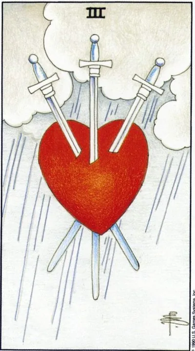

Младший аркан · Мечи
IIIТройка мечей
Three of Swords
Сердце, пронзённое тремя клинками под грозовым небом: боль, нанесённая словами, изменой или горькой правдой, которую больше нельзя отрицать.
Архетип и основное значение
Самый узнаваемый образ колоды: красное сердце в ливне, и три меча входят в него сверху, сбоку, снизу. Боль эта умственная вдвойне — мечи принадлежат стихии ума, поэтому голова снова и снова проигрывает ранящую сцену. Признание в измене, публичное унижение, письмо, после которого жизнь делится на «до» и «после».
Но у карты есть вторая строка: дождь — это конец грозы, а не начало. Правда, даже болезненная, освобождает — иллюзия рассекается вместе с сердцем. Сатурн в Весах добавляет урок справедливости: там, где нарушены обязательства, счёт приходит обязательно. Эту боль надо назвать по имени — только названную можно отпустить.
В быту
Неприятный разговор, который давно назрел: с соседом о шуме, с роднёй о деньгах, с другом о долге. Может прийти весть, которая кольнёт, — отказ, повышение тарифа, чужая небрежность, задевшая живое. Не глушите раздражение: один честный разговор сейчас экономит месяцы глухого напряжения потом.
Работа и карьера
Критика, провал сделки или конфликт в команде: проект разворачивают, отчёт разбирают при всех, возможны сокращения. Смысл послания — отделить болезненную форму от содержания: в жёсткой обратной связи почти всегда лежит зерно, которое сделает сильнее. Подписывайте документы внимательно: тройка наказывает небрежность.
Отношения
Здесь карта говорит от первого лица: измена, разоблачённая ложь, разрыв, треугольник, в котором больно всем троим. Основные удары наносят слова — сказанные сгоряча или намеренно. Если пара пережила шторм, тройка требует честности без анестезии: замалчивание превратит рану в гнойник.
Здоровье
Острые состояния: воспаление, жар, боль, обострение на нервной почве. Сердце и сосуды первыми отвечают на стресс — контролируйте показатели. Карта связана и с операциями: болезненно, но во спасение. Главный рецепт — не тащить боль в одиночку: слёзы снижают стрессовые гормоны, поддержка ускоряет выздоровление.
Эзотерическое значение
Три меча — мысль, слово и дело: три способа нанести рану; карта показывает, где вас задело и что пора оплакать. Практики горя — письма обидчику, которые сжигают, слёзы как очищение поля. Тройка — санитар души: она вскрывает нарыв, чтобы он не отравил всё тело отношений.
Клинки медленно выходят из сердца: рана затягивается и прощение становится возможным — либо боль спрятана внутрь и продолжает работу там.
Архетип и основное значение
Перевёрнутая Тройка читается двумя способами. Первый — свет: острия разворачиваются вниз, самое страшное позади, сердце восстанавливает способность чувствовать. Приходят извинения или хотя бы понимание; человек обнаруживает, что вспоминает прошлое без привычного спазма. Это карта терапии и примирения.
Второй — тень: рана не вылечена, а законсервирована. «Я в порядке» произносится при живых клинках внутри: цинизм вместо доверия, старая история, пересказываемая с прежней горячкой. Непрощённая обида — якорь, удерживающий всю последующую жизнь. Выбор ветки делает владелец сердца.
В быту
Восстановление после ссоры: первое мирное чаепитие, неловкое «привет», попытка вернуть дому нормальный звук. Либо обратное — бурчание на кухне, когда претензии высказываются кастрюлям, а не адресату. Закончите процесс: недообижаться хуже, чем ссориться открыто. Короткое сообщение человеку, с кем давно не говорили, снимает груз.
Работа и карьера
После провала команда учится работать снова: репутация отрастает, новый проект компенсирует старый, возможен возврат на прежнее место. Теневой вариант — затяжная война с обидчиком: служебные записки и мелкая месть съедают силы, которые лучше вложить в следующий успех.
Отношения
После кризиса паре даётся второй шанс: извинения произнесены, правила обсуждены, близость возвращается осторожно, как птица на подоконник. Оборотная сторона — циклические войны: одна обида всплывает при каждом удобном случае, «прости» давно стало формальностью. Настоящее прощение измеряется отсутствием желания напомнить.
Здоровье
Фаза восстановления: послеоперационный период идёт хорошо, боль стихает, анализы улучшаются. Но психосоматика напоминает о подавленном: невыплаканная печаль оседает в теле хроническими болями в спине, желудке, горле. Если «всё нормально», а сон плохой, — тело спорит с головой; верните чувствам русло.
Эзотерическое значение
Работа извлечения клинков: ритуалы прощения, мягкое отсечение старых привязок, очищение сердца огнём свечи. Эффективны обряды завершения — символическое погребение умерших отношений. Теневая сторона — исцеление как вечное откладывание: годовой сбор техник вместо одного настоящего отпускания.
🌿 Как школа читает этот ранг
Основная идея
Встреча двух идей рождает третью. Это взаимодействие не всегда приятно: приходится признать часть правды другого человека.
Как проявляется
В работе — учитывать способ действия коллеги. В отношениях — искать совместный способ жить, даже при разных привычках. В саморазвитии — принимать неприятную, но полезную правду.
Теневая сторона
Обида возникает, когда чужая информация превращается в эмоциональные выводы и удары по самооценке.
Ключевые слова
чужая правда · компромисс · разум · взаимодействие · информация
📜 Развёрнуто — из лекции по рангу
Суть карты
взаимодействие двух идей/сил даёт третью, как сложение двух векторов силы — третий вектор; «в споре рождается истина». Но взаимодействие «не полюбовное»: приходится отказываться от своей точки зрения — отсюда печаль.
Прямое положение
- Символика: пронзенное сердце + дождь-слёзы; христианский ряд ран Христа (легионер пикой) и цитаты Августина/викторианской эпохи о пронзённом сердцем страстью («Ты пронзил сердце моё стрелой любви твоей»); колода Sola Busca XV века — «не советую руководствоваться этой колодой»; Уэйт — убеждённый христианин.
- Соразмерность: «тройка — это на троечку» — обидно слабенько, легко исправимо (страшна десятка), но выбора нет: двойкой чужую правду можно отринуть, тройкой — вынуждены учитывать.
- Работа: нового сушиста посадили на вашу кухню — «подвинься», широко махать ножом нельзя; обидно, но «разумом успокаивайте эмоции — это для общего блага».
- Отношения: совместить способы действия — «как ты моешь посуду? А я вот так… давай пробовать, чтобы обоим было удобно»; блондинке при партнёре-любителе рыжих приходится думать о перекраске.
- Ссоры — НЕ значение карты: «ругаться будете, только если не хватит ума договориться».
Негативное значение
• обида — чужая, возможно ложная информация ложится на самооценку («а вдруг в чём-то прав»); выводы нелогичные, эмоциональные («раз мою посуду иначе — значит, не любит»).
Акценты и фишки школы
- Астрология — рабочая привязка системы вместо каббалы/нумерологии; конкретных деканатов в лекции нет.
- Масонская расшифровка тройки пентаклей и «трёх степеней развития личности» — фирменный ход курса; плюс акцент на приступочке.
- Различение мастей по одному вопросу: физика — пентакли, страсть и обмен интересами — жезлы, мысли — мечи, фон настроения — кубки; двойка кубков замещает эмоцию, тройка — дополняет.
- Славянский ряд поговорок как мнемоники: «поперед батьки в пекло», «моя хата с краю», «не нашим не вашим», «кто в лес, кто по дрова», «дружба дружбой, а служба службой», «мама не горюй»; котёнок Гав «давай вместе бояться» → давай вместе хотеть.
- Современные образы: автомобильные кинотеатры США, сушист на кухне, тату-олдскул (бывшее хобби лектора).
- Рекомендация смежного взгляда — курс Юрия Хана «Алхимия отношений».
Ключевые слова
в споре рождается истина; вынужденно учесть чужую правду; обидно, но логично; компромисс разумом.